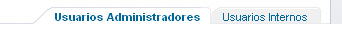
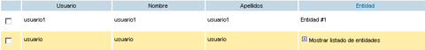
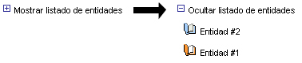
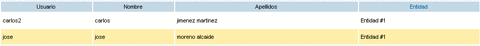

|
Listado de usuarios administradores pertenecientes a las entidades en las que el usuario tiene permisos de administración
El usuario podrá ver el listado de usuarios dados de alta desde la aplicación (usuarios administradores) o los usuarios de backoffice con permisos de administración (usuarios internos) pulsando sobre el menú superior de tipos de usuario.  Descripción de elementos de Usuarios Administradores: 1) Accesos directos: 2) Listado de usuarios

El listado de usuarios es reordenable pulsando sobre las cabeceras de la tabla (columnas "Usuario", "Nombre" y "Apellidos"). Pulsando sobre los datos de un usuario (en cualquiera de las tres columnas anteriores) se accedería a la modificación de datos del usuario pulsado. Esta operación se puede realizar también pulsando sobre el botón Modificar Por cada uno de los usuarios de nuestro listado podemos realizar las siguientes operaciones:
Modificar: Modificación de los datos del usuario y de los permisos en las entidades del sistema (o pulsado sobre las columnas "Usuario", "Nombre" y "Apellidos").
Si un usuario administrador tiene permisos en más de una entidad, en la columna "Entidad" se podrá visualizar el listado de entidades pulsando sobre el mensaje Mostrar listado de entidades Eliminar: Eliminar el usuario del sistema. Eliminar: Eliminar el usuario del sistema.

Descripción de elementos de Usuarios Internos: 1) Accesos directos: 2) Listado de usuarios

El listado de usuarios es reordenable pulsando sobre las cabeceras de la tabla (columnas "Usuario", "Nombre" y "Apellidos"). Si un usuario administrador tiene permisos en más de una entidad, en la columna "Entidad" se podrá visualizar el listado de entidades pulsando sobre el mensaje Mostrar listado de entidades |
||||